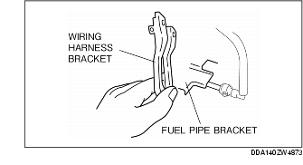

Engine coolant temperature (ECT) sensor removal/installation [ZY]
1. Disconnect the negative battery cable.
2. Perform the following procedure for easier access.
- 1. Remove the battery. (See BATTERY REMOVAL/INSTALLATION [ZY].)
- 2. Remove the air cleaner cover. (See INTAKE-AIR SYSTEM REMOVAL/INSTALLATION [ZY].)
-
3. Set the wiring harness bracket and fuel pipe bracket out of the way.

3. Drain the engine coolant. (See ENGINE COOLANT REPLACEMENT [ZY].)
4. Install the SST to the ECT sensor.

5. Remove the ECT sensor.
6. Replace the gasket.
7. Install in the reverse order of removal.